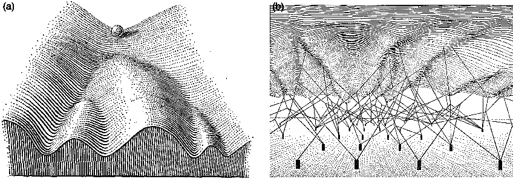

Wulan Deng's Lab

WELCOME TO THE DENG LAB
The regulation of gene expression in eukaryotes is achieved through the interaction of several levels of control that acts both locally to turn on or off individual genes in response to a specific cellular need and globally to maintain a chromatin-wide gene expression pattern that shapes cell identity.
ABOUT US
We are a young lab based on the Biomedical Pioneering Innovation Center (BIOPIC) and the School of Life Sciences at Peking University, and also supported by Beijing Advanced Innovation Center for Genomics (ICG).
We aspire to create a diverse, stimulating, and collaborative lab environment. Motivated scientists of all stages and all backgrounds are welcome to join our growing team.